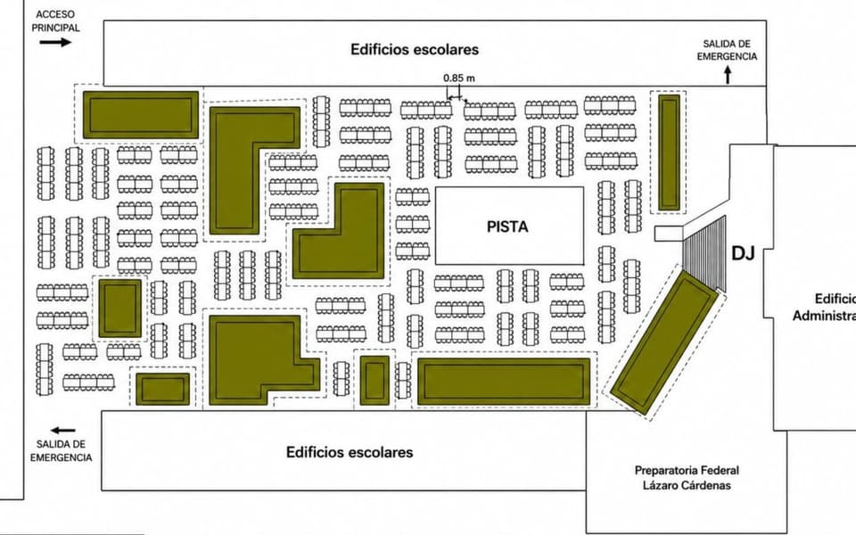
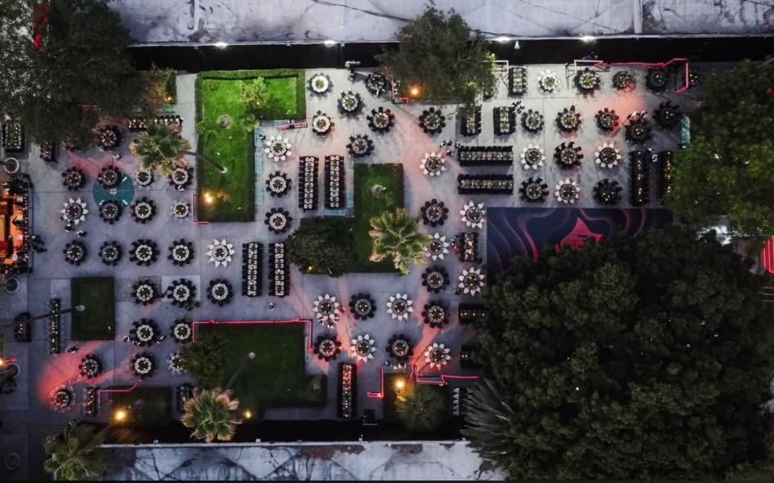
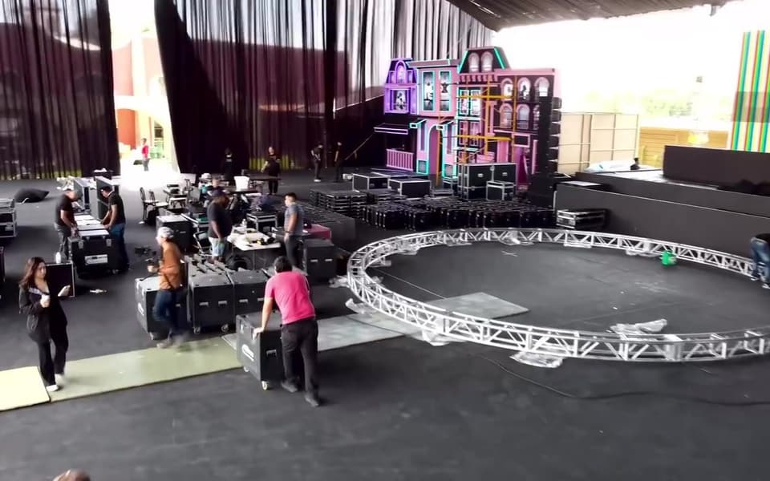

Borrador editorial Texto de muestra pendiente de revisión por el estudio.
Del plano a la celebración
Lo que ocurre entre el lienzo en blanco y la noche del evento: distribución, montaje y orden.

Las fotografías de una celebración muestran el resultado. Rara vez muestran el plano, la hoja de cálculo o la madrugada de montaje. Sin embargo, casi todo lo que hace que una noche se sienta fluida se decide ahí.
El plano como primer diseño
Para la graduación de la generación 2024 de la Preparatoria Federal Lázaro Cárdenas, el punto de partida fue un plano de distribución: accesos, salidas de emergencia, áreas verdes, pista, cabina y la posición de cada mesa, con distancias medidas entre ellas. La vista aérea de la noche del evento es, en esencia, ese mismo dibujo hecho realidad.


Un buen plano no solo acomoda personas: anticipa recorridos. Dónde se forma la fila de la barra, por dónde entran los meseros, qué ven los invitados al llegar y desde qué mesas se ve mejor la pista.
El lienzo en blanco
En los XV años de Michelle, el punto de partida fue un espacio abierto y contemporáneo, con columnas y pasto sintético. El diseño lo convirtió en una hacienda: muros de terracota, arcos con follaje, vasijas de barro y luz cálida. Entre una imagen y otra hay semanas de trabajo de diseño, producción y coordinación.


El montaje es parte del diseño
Una escenografía de gran escala, como la ciudad en neón de los XV años de Allisson, se diseña también pensando en cómo se va a construir: qué llega primero, qué se arma en sitio, cuánto tiempo toma cada etapa y qué necesita estar listo antes de que se encienda la primera luz.

Este texto es un borrador editorial preparado para el Journal de Navarrete Events y está pendiente de revisión por el estudio.